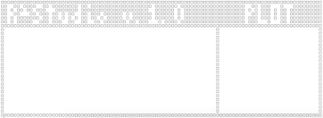
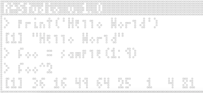
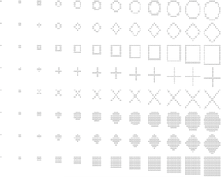
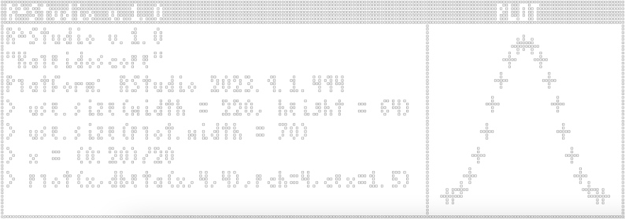
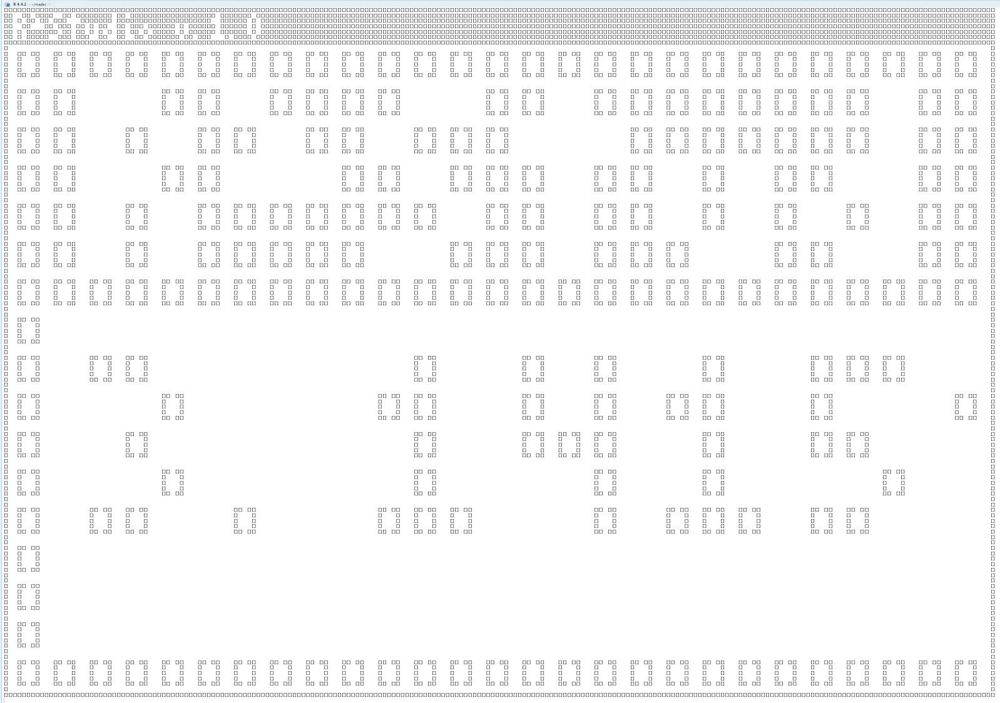

Game: R^2Studio
r2studio.RmdWe have a graphics system. Why not render an R console?
This article describes the mechanics of the R2Studio
ROM, which lets you run RStudio… in RStudio. See its documentation
(?R2Studio) for info on how to use the ROM.
Unlike vignette("snake"), this article is not meant to
be a detailed walkthrough and instead just provides an overview of how
this ROM works. You can always inspect the ROM object
(View(R2Studio)) to take a closer look at its code.
1. Goals
I wanted this ROM to provide the full R console experience and have some basic plotting capabilities. The goals were as follows:
- accurately render an R console
- provide an R environment that can save its own variables
- have the ability to make a basic scatterplot
- let the R environment interact with the RAM, to allow you to change ‘settings’ like font
- allow for live resizing of the display
Since the console is basically a static screen, we won’t need a very high framerate. One frame per second should be plenty.
2. UI
R2Studio$draw_ui():
The UI is inspired by RStudio and features a console and plotting
window. The sprites are reconstructed and drawn every frame in
R2Studio$draw_ui(), allowing them to adapt to changes in
the display resolution. All the function really does is make a few
bordered boxes with a little text.

3. R Console
R2Studio$evaluate():
Running R code isn’t very hard, since it’s ultimately running in the
main R instance. All we have to do is capture and evaluate whatever
input the user gave, using base::parse() and
base::eval(). We give the RAM its own little environment
(stored in RAM$environment), and just tell
eval() to run the captured code in that environment. This
makes it so all our code only affects RAM$environment and
doesn’t bleed out into the main R process (unless we tell it to).
The regular R console also prints the result of evaluations— e.g.,
> 3 + 5
[1] 8We can get this result using utils::capture.output().
Then we just add the little ‘>’ to the expression string, and save
both it and the result’s string as entries in
RAM$objects$console$text.
RAM$objects$console$text
c('> 3+5', '[1] 8')Evaluation Code [click to expand]
output = utils::capture.output(
tryCatch(
eval(
parse(text = expr),
envir = RAM$environment
),
error = function(err){cat('Error in',expr,':\n',err$message)} #return error message like in regular console
#(this error is then caught as the output of the eval, and correctly added to the R2Studio console)
)
)base::parse() has some quirks I haven’t ironed out yet,
mainly misinterpreting expressions that use double quotes
".
3.1 Multiline Expressions
There’s also a little code to render multiline expressions properly, e.g.
> sample(
+ 1:10,
+ 2
+ )
[1] 1 10Multiline inputs (made with Shift+Enter) get interpreted by rcade as multiple inputs from the same frame, so R2Studio pastes these back together before passing them as an expression string. Then newlines in the string are identified to figure out where to add that little ‘+’ on subsequent lines.
3.2 Rendering the Console
R2Studio$draw_console():
With expressions and outputs saved in order in
RAM$objects$console$text, rendering the console is as easy
as stacking these into one string with paste(...,sep='\n')
and drawing it at the top of the console area with
render.text(). Only the most recent entries are used, and
only enough to fit the vertical width of the display area.
I chose not to wrap lines because of the limited space— if text wrapped, single lines would end up filling the whole console and I think it’d be harder to read overall.

4. Plotting
R2Studio$draw_plot():
Since this is more of a proof of concept, I don’t need terribly advanced plotting functionality— I just want to be able to make a nice little scatterplot.
The plot is drawn on a separate box dedicated to plotting which is
drawn over the regular console. Its width can be changed with
use.size(plot.width=...) (see section 5).
Drawing points on the plot is just a matter of doing a little math to
scale them to the right spot based on the plot size and x/ylims, and
then drawing the sprite of each point. There’s also a little handling to
interpret the likes of plot(1:5) and
plot(1:5,rep(1,5)) differently like R does.
The point sprites are made in R2Studio$pch(), which
makes little geometric shapes at the desired cex size.

cex = c(0,0.2,0.5,1,1.5,2,2.5,...)
xlim and ylim work as plot arguments like
they do in regular R, and you can use main to change the
plot title.
4.1 Hooking plot()
In order to recognize plot() calls, and have them not be
interpreted as real base::plot() calls (which would be
rendered in the actual RStudio window), R2Studio$evaluate()
checks if the expression starts with "plot(". If it does,
it replaces the start with "R2Studio$plot(RAM,", so that
gets evaluated instead; this calls R2Studio$plot(), which
has all our custom plotting code.
Because I gave RAM$environment access to the RAM itself,
code can edit the RAM; we can use this here to save the new plot info to
RAM$objects$plotwindow, which
R2Studio$draw_plot() uses to draw the plot. Access to the
RAM also lets us change its ‘settings’, as shown in the next
section:
5. Meta Functions
The approach to swapping out plot() for a custom
function also lets us create our own new custom functions that only work
in the R2Studio environment.
I use this to provide some convenience functions that interact with
the game itself to change the font, resize the display area, etc. All
they do is edit RAM$ROM properties, and the game is
rendered in such a way that respects live changes to these— almost
everything draws through obj$draw() rather than the default
sprite system.
5.1 use.size()
use.size(width = NULL, height = NULL, plot.width = NULL)
Resizes the whole display or plot window; plot.width = 0
hides the plot window.

6. R3Studio
We can also… boot up the R2Studio ROM in this environment.
rcade is actually functional in this state, but you have to influence
and update it manually: by using ram.input() and
ram.tick(). ram.run() won’t work for several
reasons, so games can only display individual frames rather than running
in realtime.

How cool is that! Rendering RStudio in a render of RStudio in
RStudio. If you zoom in you can even see the [] pixels made
up of tinier [] pixels.